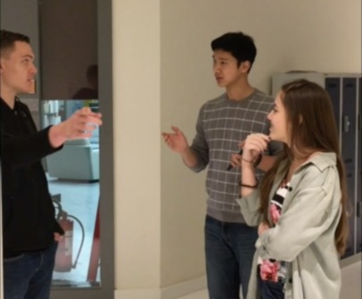

Click on the characters for more info

Henry William Dalgliesh Cavill is a British actor. Cavill began his career with lead roles in the film adaptations of The Count of Monte Cristo and I Capture the Castle.
Thomas Cruise Mapother IV (born July 3, 1962) is an American actor and producer. He has been nominated for three Academy Awards and has won three Golden Globe Awards.
Vanessa Kirby is an English stage, TV, and film actress. She starred as Estella in the BBC adaptation of Great Expectations in 2011, as Joanna in Richard Curtis' romantic comedy About Time in 2013, and currently portrays Princess Margaret in Peter Morgan's Netflix series The Crown.